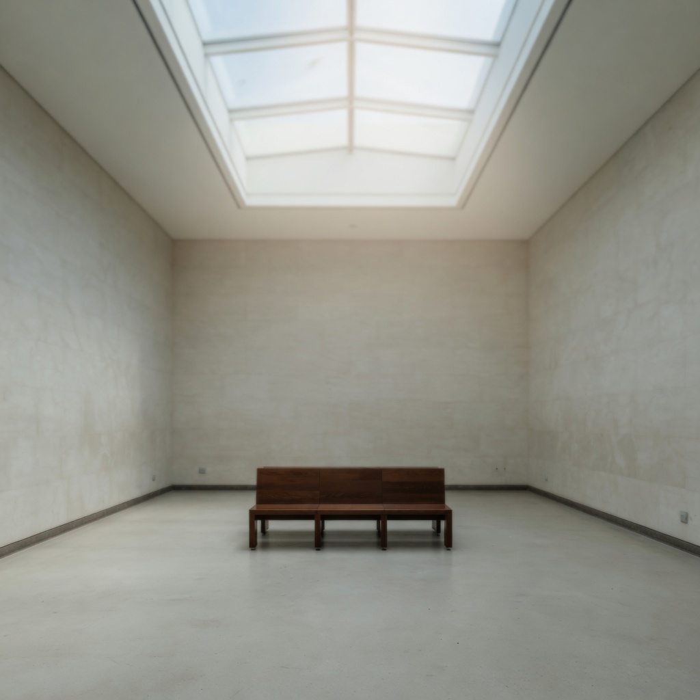

voptical_softness · high
optical softness
Overall lens-like softening: reduced bite, slight highlight spread, and melted fine detail from the optical path.
clinical optical crispness → heavy optical diffusion
What it changes
Increasing optical softness while holding subject, pose, framing, and key direction should melt fine detail and gently spread highlight cores without requiring a grain, color, or lighting-ratio change.
- pores and fabric weave melt
- specular cores widen slightly
- edges lose bite
- image feels lens-like rather than sharpened-digital
Aliases
vintage softness, lens softness, old-cinema softness, optical diffusion feel
Controlled examples
Nearby
Commonly confused with
- vec_diffusion: Diffusion is the filter or atmosphere mechanism. Optical softness is the observed image property.
- vec_edge_softness: Edge softness is contour width only. Optical softness also changes highlight cores and micro-detail.
- vec_halation: Halation is a colored or bright bleed around lights, not a global melt.
- vec_telecine_softness: Telecine softness is a transfer-path bandwidth loss, often flatter and more video-like.
- vec_veiling_glare: Veiling glare lifts contrast with a haze. Optical softness can exist with contrast intact.
Studies
Open questions
- Can high softness be produced without bloom orbs or glowing eyes?
- Is the landscape high pole DOF or optical softness?
- Should edge softness be retired as a near-alias?